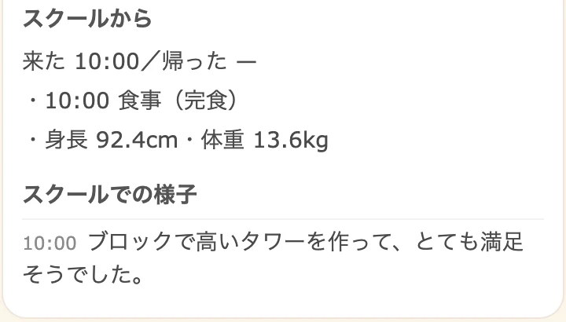
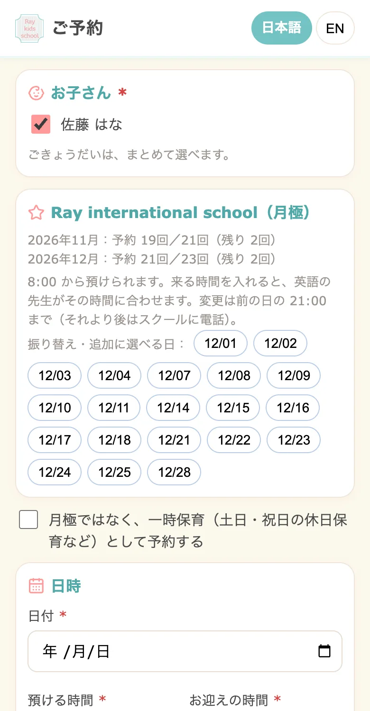
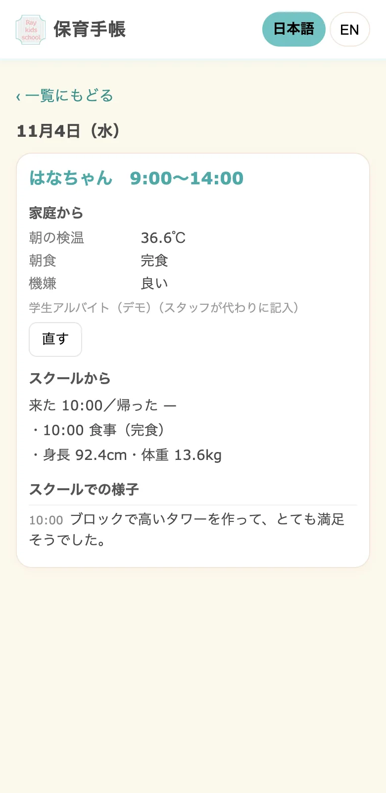
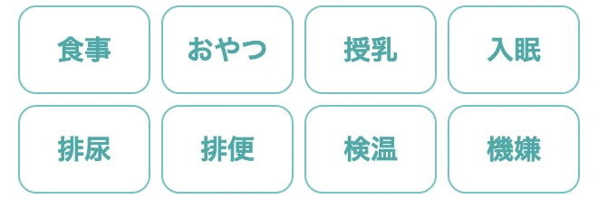
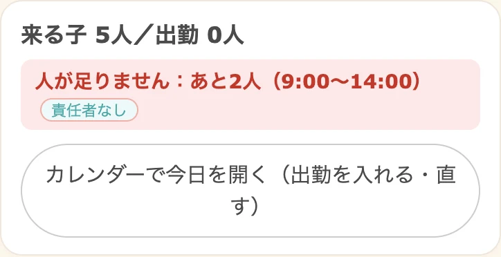
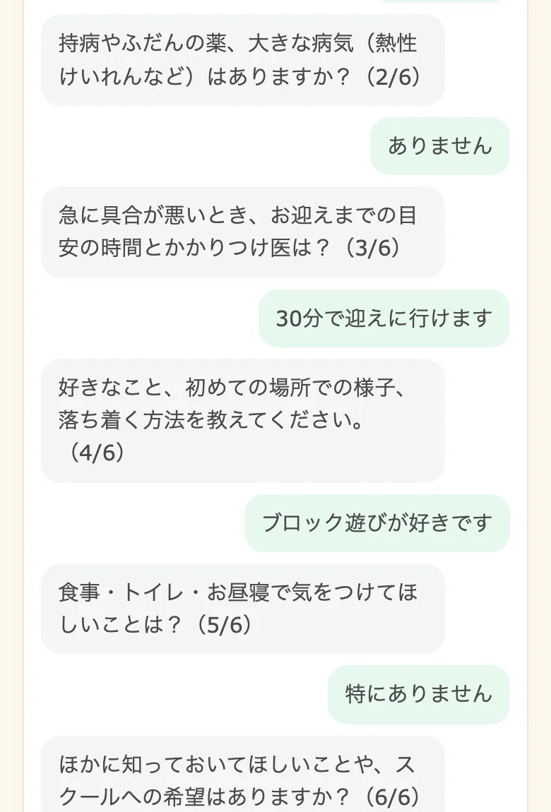
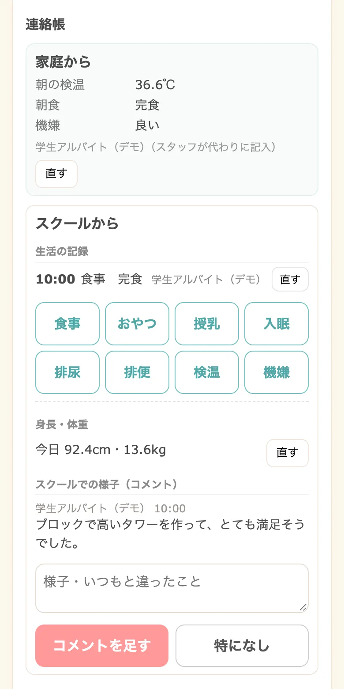
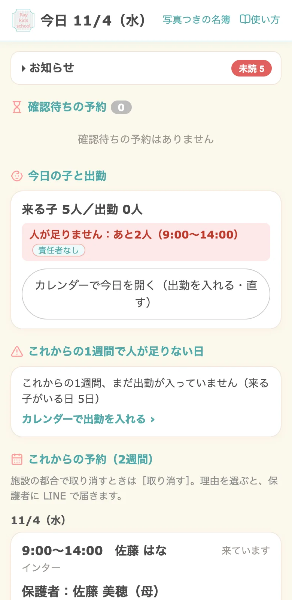

保護者
予約も連絡帳も、LINEで。
- 空いている日を選んで一時保育を予約
- 園での様子が連絡帳で届く
- 請求書・証明書も LINE で受け取り
- LINE がなければメールで。PC からも

保育施設・一時預かり施設のみなさまへ
ほいくのわは、一時保育・月極保育の予約、連絡帳、職員のシフト、請求書・無償化の提供証明書までをひとつにまとめた保育の運営システムです。保護者がもう毎日使っている LINE が、そのまま園の窓口になります。保護者にアプリを入れてもらう必要はありません。
監修：平原れいこ（保育士／Ray Kids school 代表）


2026年度から
時間単位の一時預かりがふえると、予約の受付、初めて来るご家庭の聞き取り、当日の記録、請求の手間もふえます。ほいくのわなら、はじめての登録から予約・当日の記録・請求までを LINE でつなげられます。
※ 国や自治体のシステムとの連携は、地域ごとにご相談ください。
FOR EVERYONE
保護者

職員

管理者

COMPARE
| 一般的な専用アプリ型の保育ICT | ほいくのわ | |
|---|---|---|
| 導入のしかた | 専用アプリを配布し、保護者と職員に案内する | 今の LINE 公式アカウントと友だち、職員のグループをそのまま使う |
| 保護者の準備 | 専用アプリのインストールと、ログインの設定 | 園の LINE を友だち追加するだけ。LINE がなければメールで登録 |
| 通っている家庭 | アプリでの利用登録が必要 | 電話番号と生年月日で、今の登録とつながる |
| 初めての家庭 | アプリの案内と利用登録から | QR から登録し、AI が聞き取って入園時の聞き取り票を作成 |
| 一時保育の予約 | 製品により、予約は別の仕組みと組み合わせる場合も | 空きを見て LINE で予約。条件が合えば自動で確定 |
| 補助制度の書類 | 製品の標準の書式で作成 | 無償化の提供証明書も、補助券の明細書・請求書も自動で下書き |
※「一般的な専用アプリ型」は、保護者向けに専用アプリを配布する保育ICTの一般的な傾向をまとめたもので、特定の製品を指すものではありません。製品によって対応は異なります。
FEATURES
AI
初めて来るご家庭には、AI がチャットでお子さんのことを伺い、入園時の聞き取り票にまとめます。通っているご家庭は、園の担当者がこれまでのやり取りから AI で登録を下書きし、職員が確かめて登録します。

SAFETY
CASE STUDY
一時保育（休日保育を含む）と月極のインターナショナルスクールを運営する施設様。予約の受付、入園時の聞き取り、連絡帳、職員のシフト、毎月の請求と無償化の提供証明書までを一つの仕組みにまとめ、保護者・職員・管理者がそれぞれの LINE から使っています。英語の講師も英語の画面で利用しています。


画面は導入事例の画面を、架空のデータで表示したものです。
FLOW
費用は園の規模と必要な機能によって変わります。ご相談・お見積りは無料です。オンラインでのデモも承ります。
FAQ
必要ありません。園の LINE 公式アカウントを友だち追加するだけで、予約・連絡帳・請求書の受け取りができます。LINE を使っていないご家庭はメールで登録でき、PC からも利用できます。
はい。今の公式アカウントと友だち、職員の LINE グループをそのまま使って始められます。通っているご家庭は電話番号と生年月日で今の登録とつながるので、登録し直しは不要です。
保護者が LINE で空いている日を選んで予約します。園が決めた条件に合えば自動で確定し、確定の通知も LINE に届きます。一時保育・月極・ごきょうだいの予約に対応しています。
時間単位の預かりと、初めて来るご家庭の登録・予約・当日の記録・請求までを LINE でつなげられます。国や自治体のシステムとの連携は、地域ごとにご相談ください。
園の規模と必要な機能によって変わります。ご相談・お見積りは無料で、オンラインでのデモも承ります。
CONTACT
デモのご依頼・資料のご請求・お見積りなど、お気軽にお問い合わせください。
担当者よりメールでご連絡いたします。
お問い合わせありがとうございます。
内容を確認のうえ、担当者よりご連絡いたします。